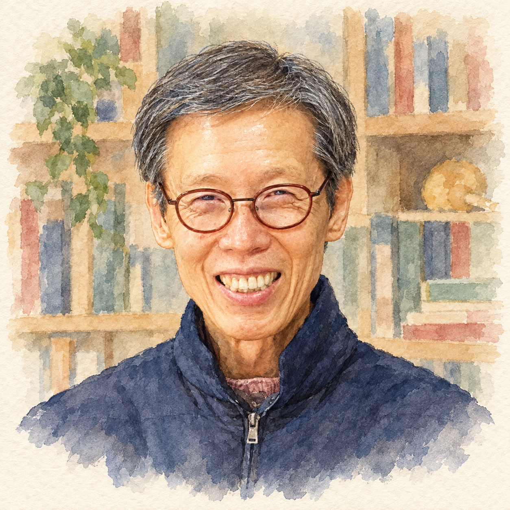
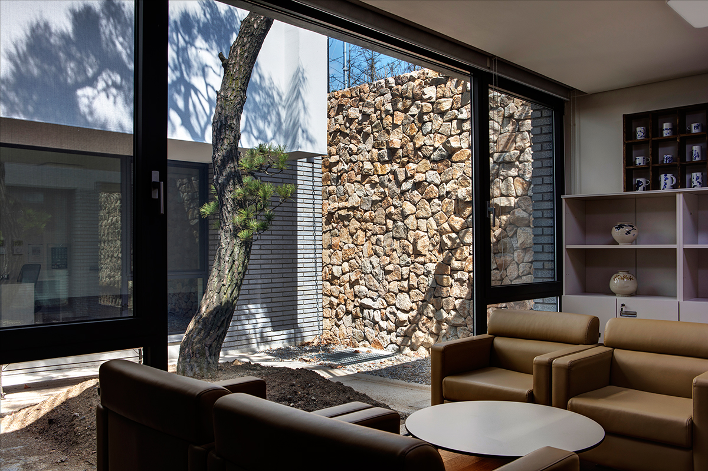
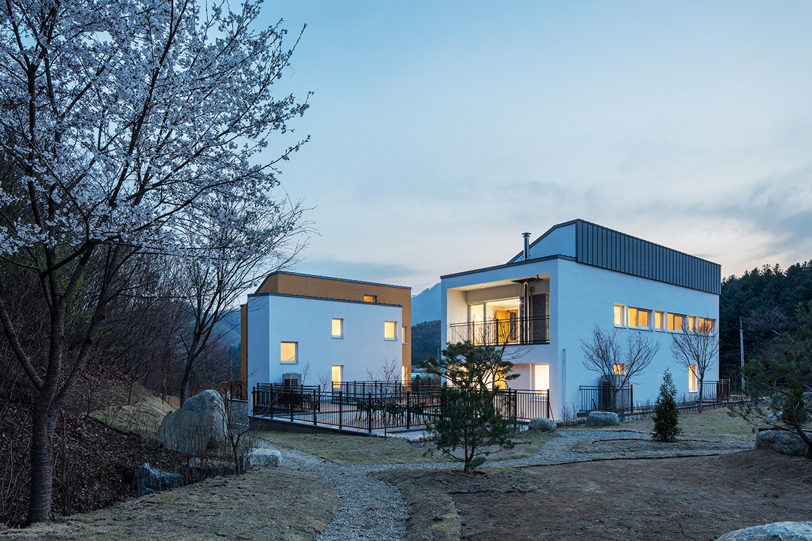

FICTION · 이번 시즌
『뉴런하우스』
게슈탈트 집단상담을 소설의 장면으로 만나는 책. 우리가 함께 첫 장부터 읽을 이야기입니다.
상담실에서 만난 마음들이
한 편의 소설이 되기까지.
사람을 이해하는 공부와 사람을 만나는 일.
그 오랜 시간을 따라 책 바깥의 이야기를 읽어 보세요.

김정규 작가는 고려대학교에서 철학을 공부했습니다. 이후 독일 본대학교에서 임상심리학 석사와 박사 학위를 받았습니다. 학위 연구의 주제는 ‘임상적 관점에서 본 성격과 종교성의 상호 관련성’이었습니다.
1988년 독일 유학을 마치고 돌아온 뒤, 성신여자대학교 심리학과에서 가르치며 국내에 게슈탈트 심리상담을 소개하고 상담 전문가들을 양성했습니다. 철학에서 시작한 공부는 임상심리학으로, 다시 실제로 사람을 만나는 상담 현장으로 이어졌습니다.
그 이력을 알고 『뉴런하우스』를 펼치면, 소설 속 대화가 조금 다르게 보일 수도 있습니다. 인물에게 무슨 일이 생기는지만큼, 한 사람이 다른 사람을 어떻게 만나고 있는지에도 눈길이 가게 되기 때문입니다.
학력·재직 연도와 하일렌 연혁은 공식 홈페이지를 참고했습니다.
작가는 독일 라인주립정신병원과 프리츠펄스연구소, 미국 샌디에이고게슈탈트치료연구소와 L.A태평양게슈탈트치료연구소 등에서 게슈탈트 치료 수련을 했습니다.
성신여자대학교 사회과학대학장을 맡기도 했습니다. 연구와 교육, 학회 활동을 통해 상담의 경험을 나누고 다음 세대의 상담 전문가를 길러 왔습니다.
게슈탈트하일렌에서는 상담 전문가 양성뿐 아니라 한부모가족 상담, 위기 청소년과 학교폭력 피해자 상담, 개인·집단상담 등으로 활동을 넓혀 왔습니다. 하일렌의 공식 소개는 심리·정서적 돌봄과 지역사회 안에서의 연결을 중요하게 이야기하고 있습니다.
나를 알아가는 일이
너를 만나는 일로 이어질 때.
하일렌의 미션에 담긴 ‘나–너 관계’는 작가의 활동과 이 소설을 이어 주는 주제이기도 합니다.
독일 디플롬 임상심리학자, 미국 샌디에이고게슈탈트치료연구소 디플로마, 미국 대인간 역동 부부치료 전문가, 한국심리학회 임상심리전문가·상담심리전문가, 한국게슈탈트심리상담학회 게슈탈트치료수련감독자 등의 자격이 제공된 저자 소개에 실려 있습니다.
『뉴런하우스』는 심리치료사 영민과 여덟 명의 남녀가 작은 셰어하우스에서 만나며 펼쳐지는 이야기입니다. 게슈탈트 심리학을 설명하는 이론 대신, 사람들이 관계 안에서 실제로 어떤 말을 하고 어떤 감정을 느끼는지 소설의 장면으로 만나게 합니다.
도서 소개에 따르면 작가는 오랜 상담 경험에서 나온 장면들을 토대로 이 소설을 썼습니다. 독자가 인물들의 이야기에 마음을 포개며 자신을 돌아볼 수 있도록, 집단상담의 과정을 소설 안에 담은 것입니다.
제목의 ‘뉴런’은 독립적으로 존재하면서도 서로 긴밀히 연결되는 신경세포를 떠올리게 합니다. 각자의 마음을 품고 살아가는 사람들이 서로에게 영향을 주고받는 모습이 이 집의 이름에도 담겨 있습니다.
책의 아홉 번째 장 제목은 「너에게 말하기」입니다. 지평이 이번 책을 함께 읽자고 한 이유이기도 합니다. 그 말이 소설 안에서 어떤 장면으로 펼쳐질지는, 함께 읽으며 만나 보겠습니다.
이번 시즌의 책과 목차 살펴보기 →소설을 읽다가 게슈탈트 상담이 더 궁금해졌다면, 김정규 교수님의 다른 책으로 관심을 이어가 보세요. 낭만북클럽의 첫 시즌을 열었던 책도 함께 소개합니다.
게슈탈트 집단상담을 소설의 장면으로 만나는 책. 우리가 함께 첫 장부터 읽을 이야기입니다.
게슈탈트 심리치료를 더 깊이 공부하고 싶을 때 살펴볼 작가의 전문 저서입니다.
한 내담자와 네 상담자의 만남을 담은 저서입니다.
게슈탈트 집단을 이끌어주신 김정규 교수님의 책으로 낭독모임을 시작했습니다. 상전과 하인, 알아차림과 관계를 함께 읽으며 서로를 만났습니다.
첫 시즌의 이야기 펼쳐 보기 →제공된 소개문에는 〈게슈탈트 치료와 자기 심리학의 대화〉, 〈게슈탈트 치료와 종교성〉, 〈게슈탈트 치료의 한국수용〉, 〈게슈탈트 치료와 동학사상〉, 〈게슈탈트 영성 치료의 다각적 이해〉 등의 논문이 소개되어 있습니다.
지평에게 김정규 작가는 개인상담을 받았던 사람이자, 농담을 만난 집단을 이끌었던 사람이기도 합니다. 그 인연이 이번에는 한 권의 책을 통해 우리 모임으로 이어졌습니다.
지평도 혼자 읽다 끝까지 가지 못했던 책을 함께 처음부터 다시 펼치려 합니다. 모두가 이미 알고 있는 답을 들으러 모이는 게 아니라, 각자 읽으며 만나게 되는 마음을 서로에게 건네려는 것입니다.
어떤 대화에서 마음이 움직였는지, 누구의 말이 오래 남았는지. 한 문단씩 소리 내어 읽고, 그때 우리 안에서 일어나는 이야기를 나누어 보겠습니다.
18시즌 안내문으로 돌아가기 →작가 경력 소개와 도서의 저자 소개문, 『뉴런하우스』 도서 소개, 게슈탈트하일렌 공식 프로필·연혁을 바탕으로 정리했습니다. 본문에서 책과 모임을 연결한 문장은 낭만북클럽 안내를 위해 작성했습니다.
게슈탈트하일렌 공식 소개 ↗
『뉴런하우스』 도서 소개 ↗
초상 원본 사진 출처: 김정규 작가 페이스북. 첨부 사진을 바탕으로 AI 수채화로 변환했습니다.
A PLACE FOR ENCOUNTER
김정규 작가가 상담과 배움의 자리를 이어 온 게슈탈트하일렌입니다.



사진 · 게슈탈트하일렌 시설 둘러보기 ↗
낭만북클럽 모임은 각자의 자리에서 Zoom으로 진행합니다.